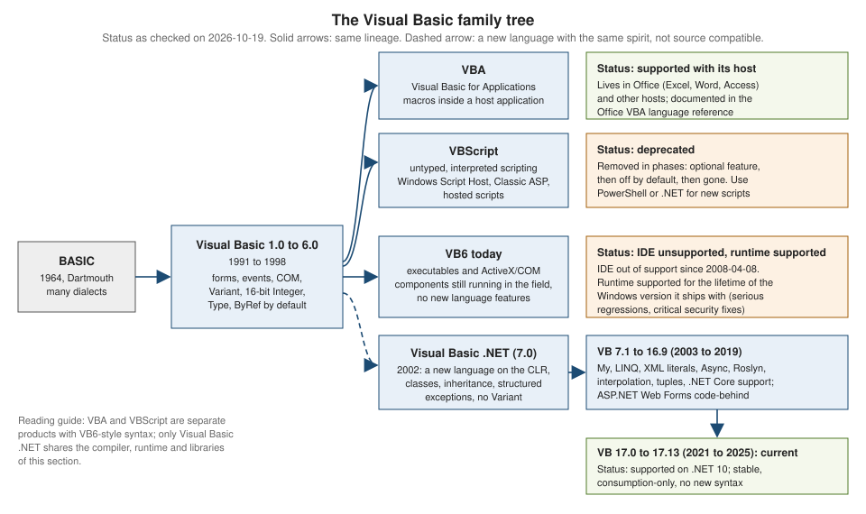

The VB Family: VB6, VBA and VBScript
|
This content was generated with the assistance of AI and should be verified against the official documentation before being relied on in production. |
This page is written against Visual Basic 17.13 on .NET 10 (SDK 10.0.402) and was checked on 2026-10-19. Visual Basic 6, VBA and VBScript are different products: the name and a large part of the syntax are shared, but each has its own runtime, its own type system and its own support status. This page explains how they differ from Visual Basic .NET so that you can recognise old code, understand what you may still be asked to maintain, and know where to go for each dialect. It is a recognition guide, not a recommendation: nothing here is a pattern for new code.
Two kinds of code blocks appear on this page, and the difference matters:
-
Legacy snippets are old-dialect code (VB6, VBA, VBScript, Classic ASP). Each one has a block title that starts with "Legacy" and says that it was not built and not run: no tool in the .NET SDK can compile it, and most of it needs Windows, COM and a host application. Treat them as the "old code you may meet" that this page exists to decode. They are original illustrations, not copies of any book or manual.
-
Visual Basic .NET examples are complete console programs that start with
Option Strict On, were built with warnings treated as errors and were run in the .NET 10 SDK container (Linux, arm64) with the root namespaceShelfApp. The output shown is the real output. The compiler messages quoted in the tables are the ones the SDK printed when each construct was put into a program of its own.
The page that explains what to do with old code is Migrating Legacy Visual Basic. The history of the language versions is on History, Versions and Language Strategy.
The family at a glance

The tree has one trunk. BASIC (1964) led through many dialects to Visual Basic 1.0 in 1991 and to Visual Basic 6.0 in 1998. Three things grew out of that trunk, and one of them is a break:
-
VBA (Visual Basic for Applications) is the VB6-style language embedded in Microsoft Office and in other host programs. It is alive and supported, but only as a part of its host.
-
VBScript is a small, untyped scripting language in the same family. Windows Script Host runs it from the command line, Internet Explorer once hosted it and Classic ASP uses it on the server. It is deprecated and is being removed from Windows in phases.
-
VB6 itself is the compiled language and IDE. Its tools are out of support; its runtime is still supported with Windows.
-
Visual Basic .NET (2002 onwards, the language of this whole section) is a rewrite on the .NET common language runtime. It kept the look of the language and changed almost everything underneath, so it never was source compatible with VB6.
| Aspect | Visual Basic .NET | VB6 | VBA | VBScript | Classic ASP |
|---|---|---|---|---|---|
Runs on |
the .NET runtime (CLR), with the SDK compiler (Roslyn) |
the VB6 runtime library (a COM component) plus Windows; native code or interpreted p-code |
the host application (Excel, Word, Access and others) |
a scripting engine, hosted by Windows Script Host, Internet Explorer or IIS |
IIS, which calls the VBScript engine |
Compiled or interpreted |
compiled to IL, then JIT-compiled |
compiled (native or p-code) |
compiled to p-code inside the document |
interpreted from source text |
|
Typing |
static types, |
typed with |
same as VB6 |
only |
same as VBScript |
Object model |
classes, inheritance, interfaces, generics |
classes with |
class modules like VB6, document objects |
|
the same, plus built-in |
Component model |
.NET assemblies; COM only through interop |
COM (ActiveX DLLs and controls) |
COM, plus the host’s object model |
COM through |
COM through |
Memory |
garbage collector, |
reference counting, deterministic |
reference counting |
reference counting |
reference counting |
Where code lives |
|
|
inside the document or workbook ( |
|
|
Platforms |
Windows, Linux, macOS for console and libraries; Windows for WinForms and WPF |
Windows only |
Windows and macOS Office, with differences |
Windows only |
Windows with IIS |
Status on 2026-10-19 |
supported; Visual Basic 17.13 is current |
IDE unsupported since 2008-04-08; runtime supported with Windows |
supported with Office |
deprecated, being removed |
legacy; an IIS feature |
Support status in detail
Support statements change, so this section says what the official pages state on the check date and then describes the direction in general terms.
Visual Basic 6. The IDE (the Visual Basic 6.0 development environment) has been out of support since 2008-04-08. The runtime is covered by an "It Just Works" commitment: Microsoft supports the VB6 runtime for the lifetime of the Windows version that it ships with, and the support is limited to serious regressions and critical security issues. In practice this means that a VB6 program may keep running on a supported Windows, but nobody supplies a supported compiler, new controls or a language that changes. Anything you build with the VB6 IDE today depends on tools that have been out of support for many years. Installing the IDE from an unofficial archive is not something this section describes or recommends.
VBA. VBA belongs to Office. Its language reference is part of the Office documentation, and its life follows Office’s. VBA code
in a document runs inside the host, uses the host’s object model and, since Office applications moved to 64-bit, needs PtrSafe and LongPtr for Declare
statements. Microsoft blocks macros in files that came from the internet by default, which matters to anyone who distributes macro-enabled documents.
For new work, Office offers other extension models; this section does not cover them.
VBScript. Microsoft announced the deprecation of VBScript in October 2023. The "Deprecated features" page says that VBScript will become a feature on demand before it is removed from Windows, and the "Resources for deprecated features" page adds that the feature on demand is initially preinstalled so that existing scripts keep running while you prepare. The Windows IT Pro blog post on the timeline describes the later phases in general terms: the feature on demand stops being preinstalled, then it is disabled by default, then it is removed. The dates are in that blog post (the publisher blocks scripted access, so it is listed without a link check); this page does not repeat them because they are plans and can move. Scripts that must survive should be rewritten in PowerShell or in a .NET program, and Internet Explorer hosting is irrelevant, because Internet Explorer is retired.
Classic ASP. Classic ASP is the original server-side page model on IIS, using VBScript or JScript in .asp files. It is an optional IIS feature, it is
not a .NET technology and it is a legacy platform. The successors on .NET are ASP.NET Web Forms (which can use Visual Basic code-behind on .NET Framework) and,
for new work, ASP.NET Core, which has no Visual Basic templates or Razor syntax: see
Web, HTTP and Services and
Migrating to Modern ASP.NET.
Visual Basic .NET. The language is supported, stable and "consumption-only": 17.13 is the current version and the compiler accepts nothing newer. See History, Versions and Language Strategy.
What a VB6 project looks like
A VB6 project is a set of text files plus binary resources. The project file (.vbp) lists the pieces. A form (.frm) holds the visual design as text at the top and the code
below it; the binary parts of a form (images, icons) go to a .frx file. Standard modules are .bas files (plain procedures and global
variables), class modules are .cls files and user controls are .ctl files. The IDE builds an .exe (a standalone program), an ActiveX .dll
or .ocx (a COM component) and registers the component in the Windows registry.
.frm), not built and not runVERSION 5.00
Begin VB.Form frmShelf
Caption = "Shelf"
ClientHeight = 2400
ClientWidth = 4200
Begin VB.CommandButton cmdAdd
Caption = "Add"
Height = 375
Left = 120
Top = 1800
Width = 1215
End
Begin VB.ListBox lstBooks
Height = 1230
Left = 120
Top = 600
Width = 3855
End
Begin VB.TextBox txtTitle
Height = 375
Left = 120
Top = 120
Width = 3855
End
End
Attribute VB_Name = "frmShelf"
Option Explicit
Private Sub cmdAdd_Click()
Dim title As String
title = txtTitle.Text
If Len(title) = 0 Then
MsgBox "Type a title first"
Exit Sub
End If
lstBooks.AddItem title
txtTitle = ""
End SubThree details of that file are worth decoding. The Begin ... End block is the designer’s output (Visual Basic .NET puts the same information in a
.Designer.vb file, or in XAML for WPF). The handler cmdAdd_Click is connected to the button by its name; Visual Basic .NET uses Handles or AddHandler instead, as
explained in Events and Handlers. And txtTitle = "" assigns to the control’s default property
(Text), which Visual Basic .NET no longer allows without an index; see
Properties and Default Properties.
The Windows Forms equivalent, with the designer file and the Application.myapp startup, is on
Windows Forms Applications.
Types: what changed
The biggest source of old-code bugs is the type system. The table lists the VB6 and VBA types and what happens to them in Visual Basic .NET.
| VB6 / VBA | Visual Basic .NET | What to know |
|---|---|---|
|
|
The name |
|
|
|
|
|
There is no |
|
|
|
|
|
|
|
|
Fixed-length strings do not exist. The declaration is a syntax error (BC30205). |
|
|
|
|
|
The two are not the same value. |
|
|
Unchanged in meaning. |
|
|
|
|
the same text |
In VB6 only |
|
not available |
Typing by first letter is gone. Declare each variable. |
arrays with |
arrays whose lower bound is always 0 |
|
The program below prints the facts behind that table. It also shows what Variant turned into. The TypeName and VarType functions still exist in
Visual Basic .NET, which helps when you port old code that inspects a variant.
Option Strict On
Module F1Types
Sub Main()
Console.WriteLine("Whole numbers")
Console.WriteLine($" Short {Short.MinValue} to {Short.MaxValue} (16 bits, the VB6 Integer)")
Console.WriteLine($" Integer {Integer.MinValue} to {Integer.MaxValue} (32 bits, the VB6 Long)")
Console.WriteLine($" Long {Long.MinValue} to {Long.MaxValue} (64 bits, new in VB.NET)")
Console.WriteLine("Currency was a scaled 64-bit integer with four decimals")
Dim currencyMax = Long.MaxValue / 10000D
Dim currencyMin = Long.MinValue / 10000D
Console.WriteLine($" VB6 Currency range: {currencyMin:N4} to {currencyMax:N4}")
Console.WriteLine($" Decimal holds 28-29 digits: {Decimal.MaxValue:N0}")
Console.WriteLine("Booleans and dates")
Console.WriteLine($" CInt(True) = {CInt(True)}, Convert.ToInt32(True) = {Convert.ToInt32(True)}, True.ToString() = {True}")
Dim day0 = Date.FromOADate(0)
Console.WriteLine($" VB6 Date zero (OADate 0) = {day0:yyyy-MM-dd}; DateTime.MinValue = {DateTime.MinValue:yyyy-MM-dd}")
Console.WriteLine("Variant became Object")
Dim items As Object() = {1S, 2, 3L, 4.5R, "five", #1/2/2000#, True, Nothing}
For Each item In items
Console.WriteLine($" {If(item Is Nothing, "Nothing", TypeName(item)),-8} VarType={VarType(item)}")
Next
Console.WriteLine("Declaring two names in one Dim")
Dim a, b As Integer
Console.WriteLine($" a is {a.GetType().Name}, b is {b.GetType().Name} (VB6 made a a Variant)")
End Sub
End ModuleOutput:
Whole numbers
Short -32768 to 32767 (16 bits, the VB6 Integer)
Integer -2147483648 to 2147483647 (32 bits, the VB6 Long)
Long -9223372036854775808 to 9223372036854775807 (64 bits, new in VB.NET)
Currency was a scaled 64-bit integer with four decimals
VB6 Currency range: -922,337,203,685,477.5808 to 922,337,203,685,477.5807
Decimal holds 28-29 digits: 79,228,162,514,264,337,593,543,950,335
Booleans and dates
CInt(True) = -1, Convert.ToInt32(True) = 1, True.ToString() = True
VB6 Date zero (OADate 0) = 1899-12-30; DateTime.MinValue = 0001-01-01
Variant became Object
Short VarType=Short
Integer VarType=Integer
Long VarType=Long
Double VarType=Double
String VarType=String
Date VarType=Date
Boolean VarType=Boolean
Nothing VarType=Object
Declaring two names in one Dim
a is Int32, b is Int32 (VB6 made a a Variant)The Currency line deserves a note. VB6’s Currency stored a 64-bit integer divided by 10,000, so the range printed is exactly the one that
the arithmetic gives. Moving it to Decimal keeps every value, and Decimal goes far beyond that range, but code that relied on Currency rounding to four places
must now round explicitly with Math.Round(value, 4). See Numbers and Math.
Syntax and statements that were removed or changed
Some VB6 syntax is simply not Visual Basic .NET. The compiler says so clearly, which is a gift when you migrate: each row below was put in a separate program with Option Strict On and the SDK printed the message shown.
| Legacy construct | Visual Basic .NET | What the compiler printed |
|---|---|---|
|
plain assignment: |
BC30807: |
|
|
BC30804: |
|
a |
BC30814: |
|
|
BC30809: |
|
|
BC30802: |
|
|
BC30808: |
|
not available: the lower bound is 0 |
BC30206: |
|
|
BC32059: |
|
|
BC30800: |
|
|
BC30002: |
|
|
BC30205: |
|
|
|
|
convert first: |
BC30038: |
|
|
BC30512, twice: |
Some old-looking constructs do still compile, and that is itself a trap. The following were checked and work in Visual Basic .NET on .NET 10:
assigning the result to the function’s own name (Total = x * 2, an old way to return a value, still compiles next to Return),
Debug.Print, Left$ and the other $ string function names, Mid, UBound, LBound, ReDim Preserve, TypeName, VarType, IIf, Call, Err.Number,
On Error (which is documented on its own page: see
Unstructured Error Handling: On Error), the FileOpen family and MsgBox (the last needs Windows Forms
on .NET: see The My Namespace).
A program in which every old construct still compiles is not necessarily correct: Mid is still 1-based while Substring is 0-based, IIf still
evaluates both branches while If() does not, and the function-name assignment does not leave the procedure the way Return does.
Procedures: ByRef by default, and Set, Let and Get
In VB6 and VBA a parameter without a modifier is passed ByRef: the callee can change the caller’s variable. In Visual Basic .NET the default is ByVal, and you
must write ByRef when you mean it. Code that you migrate must make that decision for each parameter.
Private Sub Rename(title As String) ' ByRef, because nothing was written
title = "Changed"
End Sub
Private Sub Demo()
Dim t As String
t = "Original"
Rename t ' call without parentheses
Debug.Print t ' prints Changed
End SubIn Visual Basic .NET the same shape is written with parentheses, changes nothing unless you ask, and Set is gone:
Option Strict On
Module F3Procedures
Sub Rename(title As String)
title = "Changed"
End Sub
Sub RenameByRef(ByRef title As String)
title = "Changed"
End Sub
Sub FillFirst(values As Integer())
values(0) = 99
End Sub
Function Twice(x As Integer) As Integer
Twice = x * 2
End Function
Sub Main()
Dim title = "Original"
Rename(title)
Console.WriteLine($"ByVal (the default): {title}")
RenameByRef(title)
Console.WriteLine($"ByRef (must be written): {title}")
Dim data = {1, 2, 3}
FillFirst(data)
Console.WriteLine($"An array passed ByVal still shares its elements: {data(0)}")
Console.WriteLine($"Assigning to the function name still works: {Twice(21)}")
If OperatingSystem.IsWindows() Then
Dim dictionary As Object = Microsoft.VisualBasic.Interaction.CreateObject("Scripting.Dictionary")
Console.WriteLine($"Scripting.Dictionary created through COM: {dictionary IsNot Nothing}")
Else
Console.WriteLine("Scripting.Dictionary is a COM class: it needs Windows, so this Linux run skips it")
End If
End Sub
End ModuleOutput:
ByVal (the default): Original
ByRef (must be written): Changed
An array passed ByVal still shares its elements: 99
Assigning to the function name still works: 42
Scripting.Dictionary is a COM class: it needs Windows, so this Linux run skips itNotice what the last line of the output says: CreateObject("Scripting.Dictionary") creates a COM object, and COM exists only on Windows. The
COM Interop and Office Automation page covers it. Passing an array ByVal still lets the callee change
the elements, because the array is a reference; only the reference is copied. The same is true of Collection objects and every class instance.
Set existed because VB6 had default properties and so x = y was ambiguous between "copy the value" and "make x refer to the object". In
Visual Basic .NET a default property needs an argument (an indexer), so the ambiguity is gone and so is Set. Properties were written as three
procedures in VB6, Property Get, Property Let (value) and Property Set (object); Visual Basic .NET has one Property block with Get and Set. See
Properties and Default Properties.
Objects: classes, Implements and lifetime
VB6 has class modules, but only interface inheritance through Implements: a VB6 class can implement an interface and can use Public, Private and Friend access, but
it cannot derive from another class. Visual Basic .NET adds Inherits, MustInherit, Overridable, Overrides, generics and
Interface blocks; see Inheritance and Polymorphism and
Interfaces. VBScript 5.0 and later has Class ... End Class with properties and methods, but no inheritance and no Implements.
The other big difference is object lifetime. VB6 objects are reference counted: when the last reference goes away, Class_Terminate runs at once, and
programs depend on it to close files and connections. Visual Basic .NET objects are garbage collected, so there is no moment at which a finalizer is guaranteed to
run. Resources must be released with Using and IDisposable; see
Object Lifetime and Disposal. Setting an object variable to Nothing still lets the garbage collector reclaim it, but it
does not run any code.
' Class module: LogFile.cls
Option Explicit
Private m_file As Integer
Private Sub Class_Initialize()
m_file = FreeFile
Open "C:\temp\shelf.log" For Append As #m_file
End Sub
Public Sub WriteLine(text As String)
Print #m_file, text
End Sub
Private Sub Class_Terminate()
Close #m_file ' runs the moment the last reference is released
End SubThe Visual Basic .NET shape is a class that implements IDisposable and a Using block, as in the
migration table on Migrating Legacy Visual Basic.
Collections, dictionaries and bounds
VB6 programs used the built-in Collection object (1-based, keys are case-insensitive, items are Variant) and, for dictionaries, the COM class
Scripting.Dictionary. Both have .NET relatives. The Microsoft.VisualBasic.Collection class still exists in the runtime library and keeps the VB6 rules; the generic
List(Of T) and Dictionary(Of TKey, TValue) are the right choice for new code. The program below shows both, and the array rule that replaces Option Base.
Option Strict On
Module F2Collections
Sub Main()
Dim shelf As New Microsoft.VisualBasic.Collection()
shelf.Add("Dune", "k1")
shelf.Add("Emma", "k2")
shelf.Add("Ulysses")
Console.WriteLine($"Collection is 1-based: shelf(1) = {shelf(1)}, shelf(3) = {shelf(3)}, Count = {shelf.Count}")
Console.WriteLine($"Keys ignore case: shelf(""K2"") = {shelf("K2")}")
shelf.Remove(1)
Console.WriteLine($"After Remove(1): shelf(1) = {shelf(1)}")
Try
Console.WriteLine(shelf(0))
Catch ex As IndexOutOfRangeException
Console.WriteLine("shelf(0) throws IndexOutOfRangeException")
End Try
Dim titles As New List(Of String) From {"Dune", "Emma", "Ulysses"}
Console.WriteLine($"List(Of String) is 0-based: titles(0) = {titles(0)}")
Dim ratings(4) As Integer
Console.WriteLine($"Dim ratings(4) has {ratings.Length} elements, LBound = {LBound(ratings)}, UBound = {UBound(ratings)}")
ReDim Preserve ratings(6)
Console.WriteLine($"ReDim Preserve ratings(6) -> {ratings.Length} elements")
Dim text = "Hello World"
Console.WriteLine($"Mid(text, 7, 5) = {Mid(text, 7, 5)} text.Substring(6, 5) = {text.Substring(6, 5)}")
Dim stock As New Dictionary(Of String, Integer)()
stock("Dune") = 3
Console.WriteLine($"Dictionary.Count = {stock.Count}; reading a missing key does not add it, it throws:")
Try
Console.WriteLine(stock("Emma"))
Catch ex As KeyNotFoundException
Console.WriteLine($" KeyNotFoundException, Count is still {stock.Count}")
End Try
End Sub
End ModuleOutput:
Collection is 1-based: shelf(1) = Dune, shelf(3) = Ulysses, Count = 3
Keys ignore case: shelf("K2") = Emma
After Remove(1): shelf(1) = Emma
shelf(0) throws IndexOutOfRangeException
List(Of String) is 0-based: titles(0) = Dune
Dim ratings(4) has 5 elements, LBound = 0, UBound = 4
ReDim Preserve ratings(6) -> 7 elements
Mid(text, 7, 5) = World text.Substring(6, 5) = World
Dictionary.Count = 1; reading a missing key does not add it, it throws:
KeyNotFoundException, Count is still 1The rules to carry over from the output are these:
-
Dim ratings(4)declares the upper bound, so it has five elements, andUBoundreturns 4. The same declaration in VB6 withOption Base 1would have four. This is a frequent source of off-by-one errors in migrations and in beginner texts. -
A
Collectionindex of 0 is out of range, while an array and aList(Of T)start at 0. Code that loops from 1 toCountmust be rewritten when it moves to a list. -
Scripting.Dictionaryhas a surprising behaviour: reading a missing key adds it with an empty value.Dictionary(Of TKey, TValue)throwsKeyNotFoundExceptioninstead, and offersTryGetValue. ItsCompareModeproperty (binary or text) maps to aStringComparerpassed to the constructor. -
Midand the other VB runtime string functions are 1-based, andString.Substringis 0-based. Both are correct; mixing them without care is not.
See Arrays, Collections and Strings and Text.
Error handling
All three dialects use On Error: VB6 and VBA support On Error GoTo label and On Error Resume Next and have the Err object, while VBScript has only On Error Resume Next (and On Error GoTo 0),
so a script must test Err.Number after each risky call. Visual Basic .NET has structured Try/Catch/Finally and still has On Error for compatibility. The full story, with the
Err numbers, is on Unstructured Error Handling: On Error and
Structured Exception Handling.
Public Function SafeDivide(a As Double, b As Double) As Double
On Error GoTo Fail
SafeDivide = a / b
Exit Function
Fail:
If Err.Number = 11 Then ' division by zero
SafeDivide = 0
Else
Err.Raise Err.Number, , Err.Description
End If
End FunctionFile access and the FileSystemObject
VB6 and VBA read and write files with the statements Open, Print #, Input #, Line Input #, Get, Put and Close, using a file number (FreeFile returns an unused one).
VBScript has no such statements: it uses the COM class Scripting.FileSystemObject (FSO) and its TextStream objects. Visual Basic .NET uses System.IO:
File, Directory, Path, StreamReader and StreamWriter. The FileOpen, PrintLine and related functions remain in the runtime library for
old code. See Files, Directories and Streams.
Option Explicit
Dim fso, stream, line
Set fso = CreateObject("Scripting.FileSystemObject")
If fso.FileExists("C:\temp\catalog.txt") Then
Set stream = fso.OpenTextFile("C:\temp\catalog.txt", 1) ' 1 = ForReading
Do While Not stream.AtEndOfStream
line = stream.ReadLine
WScript.Echo line
Loop
stream.Close
End IfThe tested System.IO equivalents are in the migration table on Migrating Legacy Visual Basic.
VBA in detail
VBA is the dialect that people still write every day. It is the language behind Excel, Word, Access, Outlook and PowerPoint macros, and other products embed it too. What makes it different from Visual Basic .NET is not only the syntax but the host:
-
The code is stored inside the document (a macro-enabled workbook such as
.xlsm, a document such as.docm) and runs in the host’s process. -
The program’s world is the host’s object model:
Application,Workbook,Worksheet,Rangein Excel,DocumentandSelectionin Word. The language reference documents the language; the host’s reference documents the objects. -
The editor is the Visual Basic Editor inside the host. There is no project file, no compiler output and no package manager.
-
Entry points are macros (
Public Subwith no parameters) and event handlers such asWorkbook_Open. -
Option Explicitis a per-module setting, and without it undeclared variables areVariant. -
64-bit hosts need
Declare PtrSafeandLongPtrfor calls into Windows DLLs.
Option Explicit
Public Sub ListTitles()
Dim titles As Variant
Dim i As Long
titles = Array("Dune", "Emma", "Ulysses")
For i = LBound(titles) To UBound(titles)
ThisWorkbook.Worksheets("Shelf").Cells(i + 2, 1).Value = titles(i)
Next i
End SubThe corresponding "Visual Basic .NET drives Excel from outside" pattern, with its COM caveats, is on COM Interop and Office Automation; the Open XML approach that needs no Excel at all is on file formats.
VBScript and Windows Script Host
VBScript is an interpreted language in .vbs files. Windows Script Host runs it with cscript.exe (console output) or wscript.exe (message boxes). Its distinguishing rules:
-
There are no types: every variable is a
Variant, andDim x As Integeris a syntax error. Subtypes (Integer,String,Date) are inferred from the assigned value. -
There is no
Enum, noDeclare, no file I/O statements and noGoToin error handling. -
Objects come from COM through
CreateObjectandGetObject, and are assigned withSet. -
WScriptis the host object:WScript.Echo,WScript.Arguments,WScript.StdIn,WScript.StdOut,WScript.Quit. -
Option Explicitis available, but optional; without it a typo creates a new variable. -
Classes (
Class ... End Class),Select Case,With, regular expressions (theRegExpobject) andEval/Executeexist.
cscript //nologo shelf.vbs; not built and not runOption Explicit
Class Book
Public Title
Public Copies
Public Function Describe()
Describe = Title & " (" & Copies & ")"
End Function
End Class
Dim dict, key, b
Set dict = CreateObject("Scripting.Dictionary")
Set b = New Book
b.Title = "Dune"
b.Copies = 3
dict.Add "dune", b
For Each key In dict.Keys
WScript.StdOut.WriteLine dict(key).Describe()
NextA PowerShell script is the usual replacement for a VBScript administration script; a small .NET console program is the replacement when the script is really an application. Both are shown in the
migration table on Migrating Legacy Visual Basic. The Scripting.Dictionary of the listing is the COM class discussed in the
collections section above.
Classic ASP
Classic ASP mixes HTML with VBScript between <% and %> delimiters. The server runs the script on each request and sends the HTML that it writes. The built-in objects are the HTTP model in miniature:
Request (query string, form, cookies, server variables), Response (output, redirects, cookies), Session (per-user state), Application (state shared by all users),
Server (helpers such as HTMLEncode, MapPath and CreateObject). A file named global.asa holds the Application_OnStart and Session_OnStart handlers.
<%@ Language="VBScript" %>
<% Option Explicit %>
<html>
<body>
<%
Dim title
title = Request.QueryString("title")
If Len(title) > 0 Then
Session("lastTitle") = title
End If
%>
<p>Last search: <%= Server.HTMLEncode(Session("lastTitle")) %></p>
</body>
</html>The Server.HTMLEncode call is the point to keep: output written with Response.Write or <%= %> is not encoded for you, so anything that comes from a user must be encoded by hand, or the page is open to
cross-site scripting. The equivalent in ASP.NET Web Forms is <%: %>, which encodes; see
ASP.NET Web Forms security. The state model (session and application state) carries over to Web Forms in
State Management and Caching.
Source: ASP overview
Alternatives you may hear about
Some third-party projects aim at VB6 compatibility or at running Visual Basic on other runtimes. They are not part of Microsoft’s product line, this section does not evaluate or endorse them,
and none of them changes the status of the official products. The one worth naming for historical reasons is Mono’s vbnc compiler: it is abandoned. The supported compiler is the Roslyn Visual Basic compiler in the .NET SDK
(dotnet build), which runs on Windows, Linux and macOS. For the part of a VB6 program that has to stay VB6, the supported path is the runtime that ships with Windows, not an unofficial installer.
Where the books are outdated
The two books that this section was checked against describe the family as it was in the mid-2000s and the 2010s. The current position, with the evidence on this page:
| Book habit | Today |
|---|---|
VBScript is available in "all modern versions of Windows" and runs in browsers |
VBScript is deprecated, is a feature on demand that is being phased out, and Internet Explorer is retired |
Installing Visual Basic 6 from an archive in a virtual machine as a way to learn the family |
The IDE is unsupported; this section never recommends installing it |
Mono as a Visual Basic compiler |
|
Visual Basic .NET is "backward compatible" and makes the move from VB6 easy |
It was never source compatible; see the removed-syntax table above and Migrating Legacy Visual Basic |
Several widespread misconceptions about the family, including some in beginner texts, are corrected here by stating the right form:
-
VB6 has no implementation inheritance (
Implementsonly), but it does havePublic,PrivateandFriendaccess modifiers. -
VBScript does have classes (since version 5.0), but only one data type,
Variant; VBA does not force a typedDim; and VB6 already hadBoolean,DateandByte. The three dialects are therefore not distinguished by the type lists that are often printed. -
Typeis the VB6 and VBA record; Visual Basic .NET usesStructure. -
What a beginner text sometimes calls "implicit declaration" in Visual Basic .NET is type inference (
Option Infer On) for a declared local with an initializer. It is not the same as using an undeclared variable, whichOption Explicit Onforbids. -
A variable cannot be "global, declared outside of any module": in VB6 a global belongs to a standard module, and in Visual Basic .NET it is a
Sharedmember or a module member. -
Initializers in a
Dimstatement (Dim n As Integer = 5) are Visual Basic .NET syntax; VB6 and VBA cannot do it. -
Strings are joined with
&, not`; `works in VB6 only by accident ofVariantconversion rules and is rejected or surprising underOption Strict On. -
Midis 1-based, soMid("Hello World", 7, 5)gives "World";Dim a(10) As Integerhas eleven elements in every dialect that counts by upper bound; the column dimension of a two-dimensional array inUBound(a, 2)is dimension 2, andUBoundreturns a bound, not a length. -
Class MyClassdoes not compile in Visual Basic .NET, becauseMyClassis a keyword.
Common mistakes
| Mistake | Correct form |
|---|---|
Assuming |
It is 32 bits; the 16-bit type is |
Keeping |
Choose a real type, or |
Porting |
Both are |
Leaving parameters without |
The default changed from |
Relying on |
Use |
Assuming |
It is a COM class and needs Windows; use |
Starting new VBScript or Classic ASP work |
Both are legacy; write PowerShell or .NET for scripts and ASP.NET (Core, with a C# host, or Web Forms on .NET Framework) for pages. |
Treating |
Use |
References
-
Windows deprecated features and Resources for deprecated features (VBScript)
-
VBScript deprecation: Timelines and next steps (Windows IT Pro blog; the publisher blocks scripted access, so the link was not machine-verified)
-
ASP overview (Classic ASP)
-
Visual Basic data types and Microsoft.VisualBasic.Collection